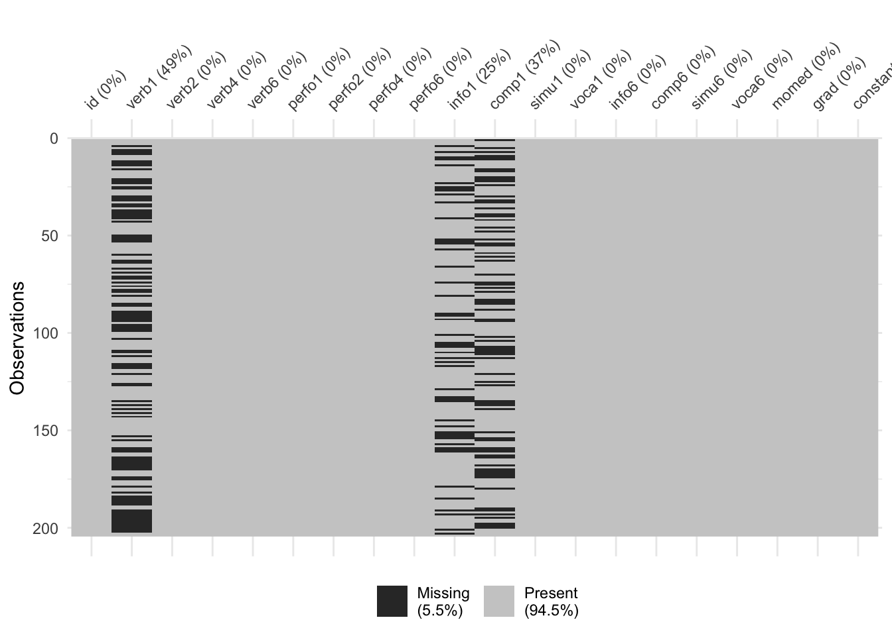

2.6 Missing Data
Dealing with missing data in a consistent manner is one of the most important aspects of data cleaning. When data are imported into R it is common to discover missing values are coded according to a variety of conventions.
Often a first step in handling missing data involves recoding missing values as NA. Writing bespoke code to handle the different types of missing data one might encounter is tedious and unnecessary.
naniar (Tierney et al. 2021) is a useful package with many convenience functions for managing missing data in R. Here we demonstrate some of this functionality.
2.6.1 Generating Example Data
Since the WISC data does not contain missing values it is helpful to generate a synthetic dataset containing some commonly encountered missing data codes.
set.seed(123)
wisc_miss <- wisc3raw
wisc_miss$verb1[sample(nrow(wisc_miss),100)] <- -99
wisc_miss$comp1[sample(nrow(wisc_miss),75)] <- "N/A"
wisc_miss$info1[sample(nrow(wisc_miss),50)] <- "NA"2.6.2 Recoding Values with NA
Now that we have a dataset with missing values we can use naniar to recode these values to NA.
na_strings <- c("NA", "N/A", -99)
wisc_miss <- naniar::replace_with_na_all(
wisc_miss, condition = ~.x %in% na_strings
)See the naniar vignette on recoding NA values for more detailed information on the package functionality.
2.6.3 Missing Data Visualization
Once we have recoded our data in a consistent manner we can use visualizations to explore the missing data. The vis_miss() function from naniar is a good starting point for visualizing the amount of missing data in our dataset. The plots shows the missing values in black and non-missing values in gray. In addition, percentages of missing data in both the dataset and individual variables are provided.
naniar::vis_miss(wisc_miss)
Many missing data visualizations are described in the naniar vignette on missing data visualization including plots for exploring missing data mechanisms.